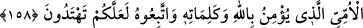
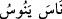
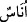

“onlardır.” (et-Te’vîlâtü’n-Necmiyye’de böyle geçmektedir.)
158. De ki: Ey insanlar! Gerçekten ben sizin hepinize, göklerin ve yerin sahibi
olan Allah’ın elçisiyim. Ondan başka tanrı yoktur, O diriltir ve öldürür. Öyle ise
Allah’a ve ümmî Peygamber olan resûlüne -ki o, Allah’a ve onun sözlerine inanır-
iman edin ve O’na uyun ki doğru yolu bulasınız.
Ey Muhammed, “de ki: “Ey İnsanlar, ben sizin hepinize, göklerin ve yerin sahibi
olan, kendisinden başka tanrı bulunmayan, yaşatan, öldüren Allah’ın elçisiyim.”
“Ey insanlar” hitabı geneldir. Rasûlullah (s.a.v), kendi zamanında mevcut olan ve
kıyamete kadar da mevcut olacak olan cinlerin ve insanların hepsine peygamber olarak
gönderilmiştir. Diğer peygamberler ise böyle değildir. Onlar, sadece kendi
zamanlarında yaşayan kavimlere gönderilmişlerdir ve şeriatları kıyamete kadar devam
etmemiştir.
Haddâdî, şöyle der: Ayetin mânâsı şöyledir: “Ben, sizin hepinize gönderilmiş olan
Allah’ın peygamberiyim. Sizi, Allah’a taata, O’nu birlemeye ve size bildireceğim
hususlarda O’na tâbî olmaya çağırıyorum.”
Âkâmü’l-Mercan adlı eserde denilmiştir ki: Müslüman guruplardan hiçbiri, Allah
Teâlâ’nın Hz. Muhammed (s.a.v.)’i cinlere, insanlara, Arab’a ve Arap olmayana, yani
bütün insanlığa peygamber olarak gönderdiği konusunda farklı bir fikir ileri
sürmemiştir.
Eğer “Süleyman (a.s.) da peygamber olarak gönderildiği kimseler bakımından
Peygamberimiz (a.s) ile müşterektir. Çünkü o da hem insanlara, hem de cinlere
gönderilmiş ve onlar üzerinde hatta bütün canlılar üzerinde hâkimiyet sahibi olmuştu.”
dersen, buna cevap olarak deriz ki: Süleyman (a.s.), cinlere peygamber olarak
gönderilmemişti. Sadece onlara hâkim olmak zapt u rabt altına alıp idare etmekle
görevlendirilmişti. Zira Süleyman (a.s.) onları hizmetlerinde kullanmış, aralarında
doğrulukla hükmetmiş fakat onları kendi dinine davet etmemiştir. Çünkü şeytanlar ve
ifritler, küfür ve azgınlık üzere bulunmakla beraber Süleyman (a.s.)’a boyun eğmişler ve
hizmetinde
bulunmuşlardır.
(Üsküplü
Valihî,
bu
konuyu
böyle
inceleyip
değerlendirmiştir.)
İbn Akîl, cinlerin “hareket etmek” mânâsına gelen “” fiilinden türeyen “nas”
(insanlar) kelimesinin mânâsına dahil olduğunu söyler. Cevherî ve Kamûs sahibi ise
“nâs” kelimesinin, aslı “” olan “ins” kelimesinin çoğulu olduğunu ve hem